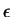

Figure  illustrates the read access graphically.
illustrates the read access graphically.
At the activating edge of /CS addresses and the RW signal have to be stable a certain time before.
A method to guarantee the setup time for the PCD8584 in th case of a 25MHz CPU would delay the /CS artificially. Since this is a setup time and a worst case analysis, we can also state the following. In normal cases, i.e. proper power supply, decent ambient temperature, the worst case will never happen. If it happens the CPU speed will be reduced slightly.
For the recognition and proper save of the data value, there are two times relevant: the time when the data bus is stable and the time when /DACK is stable on the external bus.
The data bus driver ABT652 and the /DACKO output of the GAL are enabled with the /CS. Since it takes quite a while until the busmaster device generates a response, only the propagation delays of the interface logic is of interest. In a bus cycle without wait states, /DACK will be clocked at the beginning of S3 whereas the data bus will be latched at the beginning of S5. With i the number of wait state cycles, the following has to be obeyed. For the data bus it is
and for the /DACK signal it is
At the disableing edge of /CS there are 3 limitations. First, the data bus has to be stable until after the hold time of the CPU port. Second, the data bus and the /DACK signal must not be actively driven until after the disable time of the CPU (which is roughly the start of the next cycle).
The data bus is hold until the data bus interface chip is disabled through the GAL.
At latest the data bus is disabled after the maxmimum times in the equation above.
With the same edge also the /DACK is disabled. The disable time of the output port of the GAL is enlarged by a small  due to the pullup resistor.